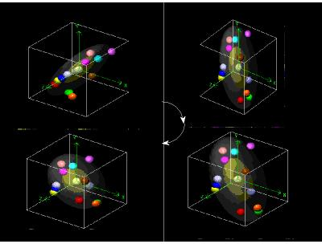
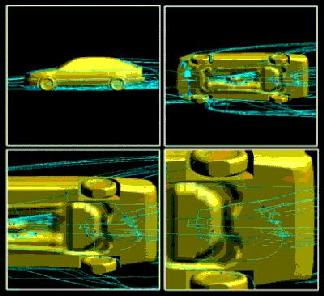

La visualització de dades abarca un conjunt d'aplicacions que es caracteritzen perquè es vol visualitzar i interpretar un volum molt elevat de dades. Les dades poden correspondre a propietats puntuals d'algun element de la naturalesa - pressió, temperatura i/o vent a l'atmosfera, característiques geològiques del subsol, propietats d'un terreny, temperatura i corrents a l'aigua del mar, etc - o bé a resultats d'experiments i/o simulacions - temperatura, tensions i deformacions a l'interior d'un objecte que s'escalfa i refreda, etc -. En tot cas, aquestes aplicacions necessiten de models geomètrics 3D molt complexes (degut a l'elevada quantitat de dades), sistemes d'interacció i eines que visualització que combinin una imatge molts cops realista de les dades amb informació simbòlica superposada que faciliti la lectura i interpretació de les dades. Veiem-ne alguns exemples:
|  |  |